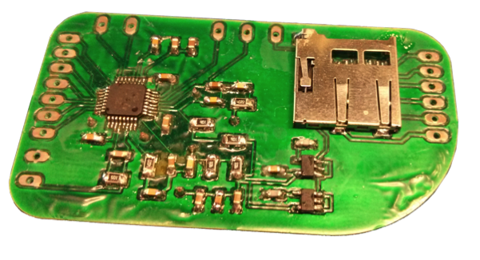
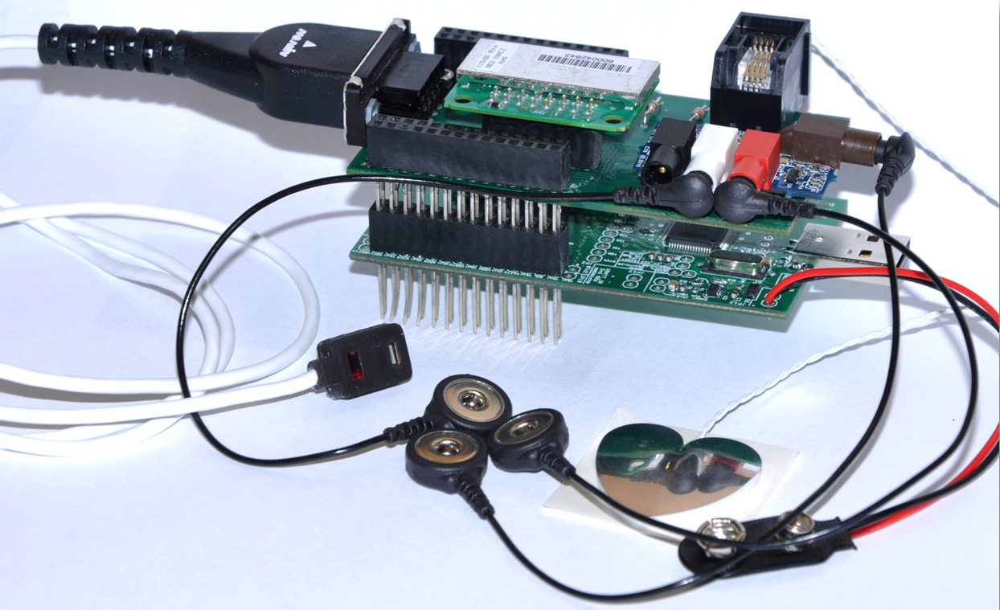
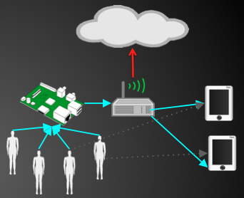
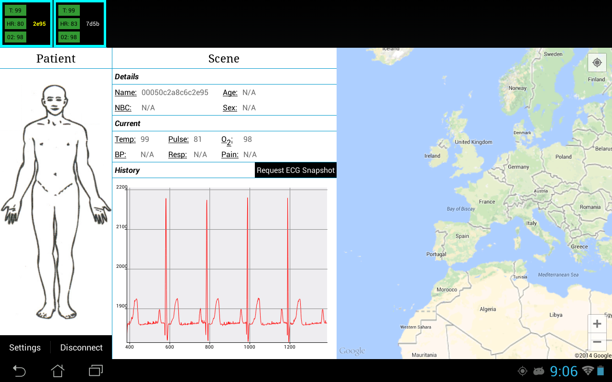
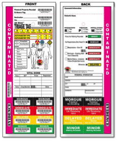
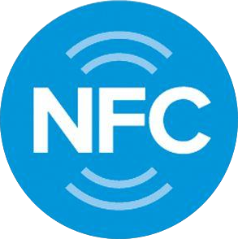

Hardware
Sensor hardware is implemented in the form of low-power, attachable biopotential meters that interface with the Econotag breakout board.
A reflectance sensor connects to the D-Sub connector on the Pulse-Ox modules which emits two different wavelengths of light into the patient’s skin which are then picked up by a photodetector on the sensor.
Pulse Oximeter
The ADS1292R is an integrated circuit provided by Texas Instruments which provides the function of a low-power, two-channel, 24-Bit Analog Front End for Biopotential Measurements like ECG and respiration.
ECG Shield with TI ADS1292R
The Redbee Econotag is a 802.15.4 wireless mote utilizing the MC1322X microcontroller. Econotag modules in Project Ripple run the Contiki OS and IETF 6LoWPAN, allowing them to connect over IPv6.
Econotag with attached sensors
The Raspberry Pi is a low-power computer that this project employs as a dual-functioning information broker and border router. The Pi receives exchanges data with Econotag motes and clients over IP.

Raspberry Pi
Ripple Network
The network architecture of Project Ripple begins with the MBAN and extends upward; to the cloudlet, the cloud, and beyond.
-
Mote Network
Sensors, Shields, Microcontrollers
- A Mesh network of low-power devices with IEEE 802.15.4 radios (e.g. Econotags)
- Sensor data is pushed to the Information Broker (Raspberry Pi), then forwarded to the responders' local Android devices.
- Network communicates using IPv6 via the 6LoWPAN standard
- Border router facilitates communication with other networks(Ethernet, Wi-Fi)
- Network map created by border router using the IPv6 Routing Protocol for Low power and Lossy Networks (RPL)
-
Cloudlet
Know the surroundings
- Hosted on the low-profile Raspberry Pi
- Serves as a miniature cloud for on-scene responders.
- Program that acts as a bridge/buffer between the mote network and the responder network because of hardware incompatibilities
- Handles local data management(archiving) and forwarding of latest sensor readings to responder devices
- Utilizes MQTT protocol to transmit data to end clients (Android, PC, etc)
- Maintains list of devices and patients and makes available to end clients
-
The Cloud
Global Awareness
- Enables the Ripple Command Center view
- Maintains master list of devices and patients
- Asynchronously aggregates all sensory directory lists from cloudlets
- Allows NASA World Wind to provide location data to cloudlet devices
- Disseminates all data to any client under subscription

Android

- Built on the Android framework
- Intuitive interface gives mobility to responders when viewing and interacting with patients' health data
- Top banner provides a vital overview for multiple patients simultaneously
- Patient health information is queried from the information broker
- Graphic representation of health data plotted in real time
- Overhead map view gives responders higher-level awareness of surroundings
Near Field Communication (NFC)

- Implemented as a substitute for triage tags during mass casualty incident.
- Responders will be equipped with Ripple NFC app for Android tablets.
- Ripple NFC app provides a user interface similar to existing triage tags
- Supports read/write/re-write functions
- Patients will have NFC tag attached to them, similar to existing triage tag protocol
- NFC tags allow for fast and efficient data transfer without the need to pair devices
